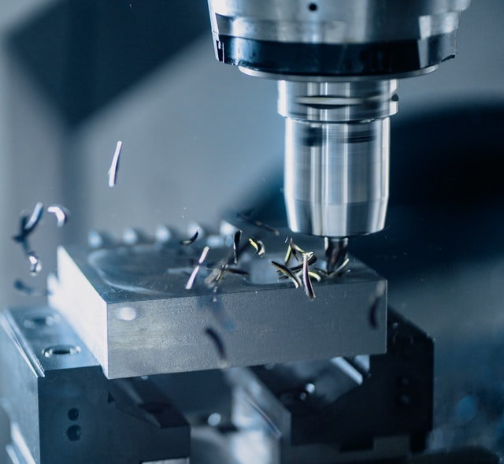
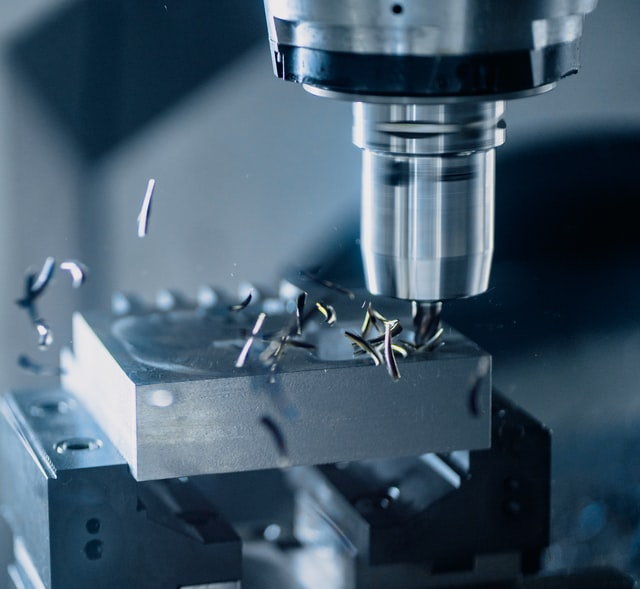

Since the beginning of my career as a structural engineer,
climate issues have influenced my decisions. At
first, by orienting me towards timber, a material
with low environmental impact. After a Master's degree specialized
in timber engineering, I worked for more than 7 years in companies
specialized in glued laminated and timber frame structures as well
as heritage preservation. These experiences closely coupled with
prefabrication workshops and construction sites allowed me to
develop a real expertise in
Design for Manufacturing and Assembly (DfMA) .
Passionate about digital technologies and aware of
the shortcoming of the construction industry in this field, I wanted
to align my interest in new technologies and apply it to
architectural and structural design. I then undertook a second
master’s degree at the Stuttgart University of Architecture where
specialized in
digital technologies and parametric design
applied to architecture. I was able to develop new skills to harness
the power of digital tools in order to propose technical and
architectural solutions that are more efficient and
respectful of the environment.
I am now running
ITERATIONS, a small structural design consultancy where I am promoting
low carbon materials such as timber, natural stone
or structures inspired by
vernacular architecture such as rammed earth. At
the same time, I am developing
bespoke digital workflows and tools to provide
optimized and high-quality services to our clients.
.jpg)
.jpg)
.jpg)
.jpg)
.jpg)
.jpg)
.jpg)
.jpg)
.jpg)
.jpg)

 
